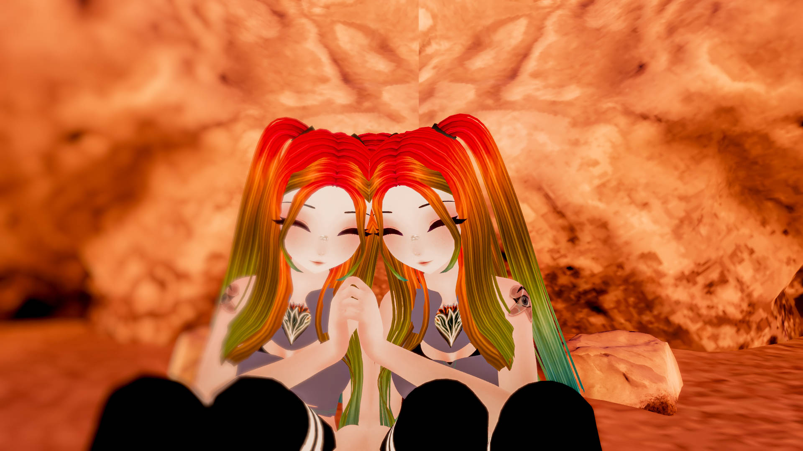

An example of something I have created previously includes an avatar that I created and took images of in a past semester. This allowed me to explore 3D modeling as well as gave me motivation to try more!

This world is meant to express the wonders that creation gives us. Through the creation of the world, I wish to express all of the joys in life that I have personally experienced. As well as the wonders of the mind. What can my mind come up with and how can I put this into play?
For beginning context, this project is mainly created by me but with many assets (the actual items in the world such as trees, flowers, fences, etc). These assets being used were not made by me as that may have taken too long of a process and I wouldn’t have been able to create the actual world. I plan to in the future start making these “assets” to be able also to sell, and maybe give options for free use. As a creator, I truly appreciate the number of people with free usable assets for world creation!
My Portfolio for this project will consist of images and videos relating to the creation and final upload of my world into the platform known as VRChat, a virtual reality "game" that I personally spend a lot of time in. Through this platform one is able to create their own 3D modeled pieces and import them for many others to enjoy!
With this in mind creating a world that is cohesive and be able to put some form of emotional connection is not something one may be able to fnd on VRChat very often, most worlds ae games, places to relax, aesthetic worlds, etc. I hop eto break this idea of "basic" worlds by making one based on my own personal emotional connections.
To start off my world maing experience I had to go through a lot of tutorials and assistance from friends who have experience in this field. With there help I have been able to create a decent amount of my world and from there I have expanded my knowledge on 3D modeling, and some overall world creation tactics.
Below this point you will see a lot of images and videos on how the progress of this project has gone through. With short explainatons to go along with them!
During Day One I was able to accomplish in learning how to create terrian, and how to perfect it to how I wished my world to look at the most basic level!
Bring able to think creatively about how exactly I wished this world to be geographically was very intriguing and it just kept growing from there.
During Day Two I there was more of an environmental aspect I wanted to play with, such as trees, grass, flowers, etc.
With that in mind I spent a lot of this time trying to figue out the placement of certain things and getting it all how I wished my world to look!
Throughout Day Three there was an element of world making I wanted to see the most, how gathering assets and the placement of them work.
The importance of this part of creating a world is large, knowing that what you place all exist in there own way,
and being able to understand the reasoning behind where they go.
While trying to do as much as I could, and having a great time working on my world up until Critique one,
I spent a lot of time adding areas of instrest for myself.
These Include:
- Campsite
- Floating Tree w/ Library
- Witches Hut / Halloween Experience
- Mountain Mushroom Home
- Obelisk Discovery (In-Progress)
- Stuffed Animal Area (In-Progress)
Through these videos I was able to exress what I had accomplished whilst showing visually the best way!
Throughout the Next couple of weeks I was able to do many different things that endedup becoming some of the final aspects of my world!
Making Additions Including:
- Adding Additional Stuffed Animals
- Adding Detailed Texture Changes for Specific Areas (Witches Hut + Obelisk)
- Adding Functional Teleporting System: Player to Player
Images From Visit
Picture Wall
This Wall represents the people who have visited my world over time,
I plan to update this wall regularly, based on the total visits,
As well as on interactions with world!
Lastly, I was able to lower my world size from 713.81MB down to 190.7MB

When it comes to creating my video for my final portfolio, I was struggling, as no one wanted to get on my game to be able to help me record
This is because most people are busy and do not have the time to get on at any given moment.
During this time I struggled to figure out how to create something to make it feel connected to people, and my friends.
So Far, I have created a short video with various clips of my world over time.
While the wish isto include a Interview aspect. This will have to be figured out in the near future.